Práctica 2.1 - Servidor web Nginx: sitios virtuales y transferencia por SFTP¶
Objetivos
Al terminar esta práctica deberás ser capaz de:
- Instalar el servidor web Nginx y comprobar que funciona.
- Configurar dos sitios virtuales en el mismo servidor, cada uno con su nombre de dominio.
- Publicar una web clonándola de un repositorio Git, y otra subiéndola por SFTP.
- Asignar propietarios y permisos correctos a los ficheros de una web.
- Detectar y corregir un fallo de seguridad real: la exposición de la carpeta
.git. - Diagnosticar problemas con los registros (logs) de Nginx.
Cuándo se hace
Al terminar el bloque 2 de la teoría del Tema 2: virtual hosts, Apache y Nginx, Nginx por dentro y FTP/SFTP.
Antes de empezar
- Tienes la práctica 1.1 terminada: la máquina virtual con IP
192.168.56.10y acceso por SSH con clave. - La máquina tiene acceso a Internet (adaptador NAT).
- En tu ordenador tienes permisos de administrador, que harán falta para editar el fichero
hosts(apartado 4).
Todos los comandos de la Debian se ejecutan desde tu sesión SSH, nunca desde la ventana de VirtualBox.
Tus nombres de dominio¶
En esta práctica crearás dos sitios web, y sus nombres llevan tu apellido, igual que el hostname:
en minúsculas, sin acentos y sin la ñ (por ejemplo, web1.garcia.test). En los ejemplos de esta página aparece garcia: tú escribe el tuyo en todos los comandos y ficheros.
¿Por qué .test?
.test es un dominio de primer nivel reservado para pruebas (RFC 6761): nunca existirá en Internet, así que no chocarás con ninguna web real. No uses .dev, que sí existe y obliga al navegador a usar HTTPS, ni .local, que tiene un uso especial en las redes locales.
1. Instalar Nginx¶
Actualiza la lista de paquetes e instala Nginx, junto con tres herramientas que necesitarás y que no vienen en la instalación mínima de Debian:
Nginx arranca solo al instalarse y queda habilitado para arrancar con la máquina. Compruébalo:
Para salir, pulsa q
Cuando la salida no cabe en la pantalla, systemctl la muestra en un visor que se queda esperando (abajo verás lines 1-15/15 (END)). Puedes moverte con las flechas y salir con la tecla q. Si prefieres que no se quede esperando, añade --no-pager: systemctl status nginx --no-pager.
● nginx.service - A high performance web server and a reverse proxy server
Loaded: loaded (/usr/lib/systemd/system/nginx.service; enabled; preset: enabled)
Active: active (running) since Tue 2026-10-06 11:36:16 CEST; 17s ago
Invocation: 2c8e0c8516ad428e93334fab6c2848cb
Docs: man:nginx(8)
Process: 1257 ExecStartPre=/usr/sbin/nginx -t -q -g daemon on; master_process on; ...
Process: 1263 ExecStart=/usr/sbin/nginx -g daemon on; master_process on; (code=exited, ...
Main PID: 1310 (nginx)
Tasks: 3 (limit: 2317)
Memory: 3M (peak: 6.6M)
CPU: 51ms
CGroup: /system.slice/nginx.service
├─1310 "nginx: master process /usr/sbin/nginx -g daemon on; master_process on;"
├─1313 "nginx: worker process"
└─1314 "nginx: worker process"
Debe aparecer active (running) y, en la línea Loaded, enabled. Fíjate también en los procesos: un proceso maestro, que lee la configuración, y los trabajadores (worker), que atienden las peticiones; es lo que viste en el apartado 6 de la teoría.
Comprueba también que escucha en el puerto 80, y la versión instalada:
LISTEN 0 511 0.0.0.0:80 0.0.0.0:* users:(("nginx",pid=1314,fd=5),("nginx",pid=1313,fd=5),("nginx",pid=1310,fd=5))
LISTEN 0 511 [::]:80 [::]:* users:(("nginx",pid=1314,fd=6),("nginx",pid=1313,fd=6),("nginx",pid=1310,fd=6))
nginx version: nginx/1.26.3
Los tres pid son los mismos procesos que viste en systemctl status: el maestro y los dos trabajadores.
¿Por qué sudo nginx -v?
Sin sudo, obtendrás -bash: nginx: command not found, aunque Nginx esté instalado. El programa está en /usr/sbin, la carpeta de los comandos de administración, y en Debian esa carpeta solo está en el PATH de root. Con sudo se encuentra. También funcionaría escribir la ruta completa: /usr/sbin/nginx -v.
Por último, abre el navegador de tu ordenador y entra en http://192.168.56.10. Verás la página de bienvenida de Nginx:
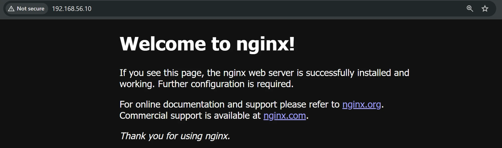
El aviso No seguro (Not secure) de la barra de direcciones es normal: la página viaja por HTTP, sin cifrar. Lo resolverás en la práctica 2.2, con HTTPS.
Comprueba antes de seguir
Si el navegador no carga la página, revisa en este orden: que la máquina esté encendida, que respondas al ping 192.168.56.10 desde PowerShell y que systemctl status nginx diga active. Es el mismo orden que seguirás siempre que algo no cargue: ¿está la máquina?, ¿está el servicio?, ¿escucha en el puerto?
2. Un vistazo a la configuración¶
Antes de tocar nada, mira cómo está organizada la configuración (lo tienes explicado en el apartado 6 de la teoría):
conf.d fastcgi_params koi-win modules-available nginx.conf scgi_params sites-enabled uwsgi_params
fastcgi.conf koi-utf mime.types modules-enabled proxy_params sites-available snippets win-utf
/etc/nginx/sites-available/:
total 4
-rw-r--r-- 1 root root 2412 Jun 27 22:25 default
/etc/nginx/sites-enabled/:
total 0
lrwxrwxrwx 1 root root 34 Oct 6 11:36 default -> /etc/nginx/sites-available/default
Ahí están el fichero principal, nginx.conf, y las carpetas que viste en la teoría. En sites-available está el fichero default, que es el sitio que acabas de ver en el navegador. En sites-enabled hay un enlace simbólico que apunta a él (la l del principio y la flecha ->): por eso está activo.
Mira cómo es ese sitio, sin los comentarios:
server {
listen 80 default_server;
listen [::]:80 default_server;
root /var/www/html;
index index.html index.htm index.nginx-debian.html;
server_name _;
location / {
try_files $uri $uri/ =404;
}
}
Fíjate en default_server: es el sitio que responde cuando una petición no va dirigida a ningún otro. El fichero que has visto en el navegador es /var/www/html/index.nginx-debian.html.
No vamos a modificar este fichero. Cada sitio nuevo tendrá su propio fichero de configuración.
3. Primer sitio: web1, desde un repositorio Git¶
3.1 La carpeta y el contenido¶
Crea la carpeta del sitio y haz que tu usuario sea su propietario:
La opción -p (de parents) crea también las carpetas intermedias que falten y no da error si la carpeta ya existe, así que puedes repetir el comando sin miedo.
chown cambia el propietario. Se escribe usuario:grupo, y $USER es una variable que contiene tu nombre de usuario, así que no tienes que escribirlo (en Debian, cada usuario tiene además un grupo propio con su mismo nombre). La opción -R (recursivo) lo aplica también a todo lo que haya dentro de la carpeta.
Ahora clona dentro, en la subcarpeta html, una web de ejemplo. Como la carpeta es tuya, no necesitas sudo:
Y deja los permisos bien definidos:
total 64
drwxr-xr-x 6 alumno alumno 4096 Oct 6 11:51 .
drwxr-xr-x 3 alumno alumno 4096 Oct 6 11:51 ..
drwxr-xr-x 6 alumno alumno 4096 Oct 6 11:51 assets
drwxr-xr-x 2 alumno alumno 4096 Oct 6 11:51 error
drwxr-xr-x 8 alumno alumno 4096 Oct 6 11:51 .git
drwxr-xr-x 2 alumno alumno 4096 Oct 6 11:51 images
-rw-r--r-- 1 alumno alumno 14522 Oct 6 11:51 index.html
-rw-r--r-- 1 alumno alumno 17128 Oct 6 11:51 LICENSE.MD
-rw-r--r-- 1 alumno alumno 648 Oct 6 11:51 README.MD
Todo es de tu usuario (en el ejemplo, alumno), y ahí está el index.html que servirá Nginx. Fíjate también en la carpeta .git: volverás a ella en el apartado 5.
Ese chmod significa: el propietario (u) puede leer y escribir; el grupo y el resto (go), solo leer. La X mayúscula da permiso de ejecución solo a las carpetas, que lo necesitan para poder entrar en ellas. El resultado son carpetas con 755 (drwxr-xr-x) y ficheros con 644 (-rw-r--r--).
Cómo se leen los permisos: drwxr-xr-x y 755
drwxr-xr-x es la forma en que ls -l muestra los permisos de una carpeta. Se lee por trozos:
| Trozo | A quién afecta | Significa |
|---|---|---|
d |
— | Es una carpeta (directory). Si fuera un fichero, saldría -; si fuera un enlace, l |
rwx |
El propietario (tú) | Puede leer, escribir y entrar |
r-x |
El grupo | Puede leer y entrar, pero no escribir |
r-x |
El resto (aquí, www-data) |
Puede leer y entrar, pero no escribir |
Cada posición es siempre la misma letra: r leer, w escribir, x ejecutar (en una carpeta, entrar en ella). Un guion significa que falta ese permiso: en r-x falta la w.
En resumen, drwxr-xr-x dice: "es una carpeta; tú puedes hacer de todo y los demás pueden mirar dentro, pero no cambiar nada". Es justo lo que necesita Nginx, que lee la web pero no debe poder modificarla.
Los mismos permisos se escriben también con tres cifras, una por grupo. Cada permiso vale un número y se suman: r = 4, w = 2, x = 1.
| Letras | Suma | Cifra |
|---|---|---|
rwx |
4 + 2 + 1 | 7 |
rw- |
4 + 2 | 6 |
r-x |
4 + 1 | 5 |
r-- |
4 | 4 |
--- |
0 | 0 |
Así, rwxr-xr-x es 755 (tú lo haces todo; los demás leen y entran) y rw-r--r-- es 644 (tú lees y escribes; los demás solo leen). En el apartado 7 usarás chmod 700: rwx------, solo tú.
¿Por qué no www-data como propietario?
Muchos tutoriales, y la versión anterior de esta práctica, hacen chown www-data:www-data sobre la web. No lo hagas. Nginx se ejecuta como www-data y solo necesita leer los ficheros. Si www-data fuera el dueño, también podría modificarlos, y un fallo en el servidor permitiría a un atacante cambiar tu web. El dueño eres tú; www-data lee gracias a los permisos del "resto" (r-x en las carpetas y r-- en los ficheros). Es el principio de mínimo privilegio.
3.2 El fichero de configuración del sitio¶
Crea el fichero del sitio en sites-available. Es costumbre llamarlo igual que el dominio:
Con este contenido (cambia garcia en las dos líneas en las que aparece, server_name y root):
server {
listen 80;
listen [::]:80;
server_name web1.garcia.test;
root /var/www/web1.garcia.test/html;
index index.html;
access_log /var/log/nginx/web1.access.log;
error_log /var/log/nginx/web1.error.log;
location / {
try_files $uri $uri/ =404;
}
}
Guarda y sal de nano con Ctrl+O, Enter y Ctrl+X, como en la práctica 1.1.
| Directiva | Qué hace |
|---|---|
listen 80; / listen [::]:80; |
Escucha en el puerto 80, por IPv4 y por IPv6 |
server_name |
El nombre del sitio. Nginx lo compara con la cabecera Host de cada petición |
root |
La carpeta donde está la web: la que contiene el index.html |
index |
Qué fichero servir cuando se pide una carpeta, como / |
access_log / error_log |
Registros propios de este sitio, separados de los generales |
try_files $uri $uri/ =404; |
Busca un fichero con ese nombre; si no, una carpeta; si no, responde 404 |
Si trabajas con VS Code
Con la extensión Remote - SSH (la viste en la práctica 1.1) puedes abrir y editar estos ficheros con el editor de VS Code, con colores. Para guardar los que pertenecen a root, VS Code te ofrecerá reintentar con sudo.
3.3 Activar el sitio¶
Para activarlo, crea el enlace simbólico en sites-enabled:
Comprueba que la configuración no tiene errores y, solo si está bien, recárgala:
nginx: the configuration file /etc/nginx/nginx.conf syntax is ok
nginx: configuration file /etc/nginx/nginx.conf test is successful
nginx -t antes de aplicar. Siempre.
Si te equivocas, nginx -t te dice qué está mal y en qué línea. Por ejemplo, si te dejas el ; al final de root:
nginx: [emerg] invalid number of arguments in "root" directive in /etc/nginx/sites-enabled/web1.garcia.test:8
nginx: configuration file /etc/nginx/nginx.conf test failed
Con reload, si la configuración es incorrecta, Nginx sigue funcionando con la anterior. Con restart, se para y no vuelve a arrancar. Por eso usamos nginx -t && reload: el && solo recarga si la comprobación ha ido bien.
3.4 Probar el sitio sin DNS¶
Tu ordenador todavía no sabe que web1.garcia.test es 192.168.56.10. Pero recuerda cómo elige Nginx el sitio: por la cabecera Host. Puedes enviarla tú a mano con curl. Desde PowerShell, en tu ordenador:
Dos terminales: la de la Debian y la de tu ordenador
Desde aquí vas a alternar entre dos ventanas. Mira siempre el prompt antes de escribir:
alumno@debian-garcia:~$es tu sesión SSH: los comandos se ejecutan en la Debian.PS C:\Users\...>es PowerShell en tu ordenador: los comandos se ejecutan en Windows.
Deja abierta la sesión SSH y abre otra ventana de PowerShell para los comandos de tu ordenador. Si escribes curl.exe en la sesión SSH, obtendrás -bash: curl.exe: command not found, porque curl.exe y Select-String solo existen en Windows.
curl.exe -s http://192.168.56.10/ | Select-String "<title>"
curl.exe -s -H "Host: web1.garcia.test" http://192.168.56.10/ | Select-String "<title>"
PS C:\Users\alumno> curl.exe -s http://192.168.56.10/ | Select-String "<title>"
<title>Welcome to nginx!</title>
PS C:\Users\alumno> curl.exe -s -H "Host: web1.garcia.test" http://192.168.56.10/ | Select-String "<title>"
<title>Welcome</title>
Misma IP, mismo puerto, respuestas distintas. Sin la cabecera, curl envía Host: 192.168.56.10, que no coincide con ningún server_name, y responde el sitio por defecto. Con la cabecera, responde tu sitio. Esto es exactamente lo que es un virtual host.
curl.exe, no curl
Escribe la extensión .exe. En Windows PowerShell, curl a secas es un alias de Invoke-WebRequest, un comando distinto que no entiende estas opciones.
4. Resolver los nombres: el fichero hosts¶
Para usar el navegador hace falta que tu ordenador traduzca el nombre a la IP. De eso se encarga el DNS, que montarás en el Tema 4. Mientras tanto, lo haremos a mano con el fichero hosts, que el sistema consulta antes que el DNS.
Editar este fichero requiere permisos de administrador. Pulsa Win + X y elige Terminal (Administrador) (o Windows PowerShell (Administrador)). En esa ventana:
Al final del fichero, en una línea nueva, añade tus dos nombres:
Las líneas que empiezan por # son comentarios y no hacen nada: la tuya no debe llevarlo. Si tienes Docker Desktop, verás un bloque que acaba en # End of section: pon tu línea después, porque Docker reescribe lo que hay dentro de su bloque.
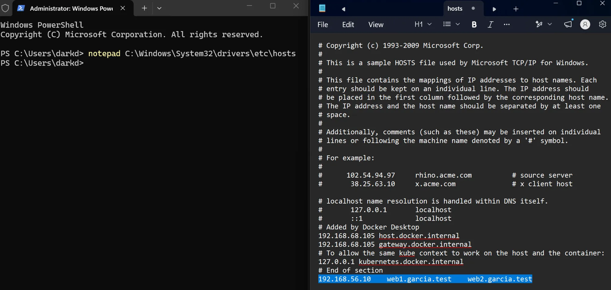
Fíjate en el título de la terminal: Administrator.
Guarda (Ctrl+S) y cierra el Bloc de notas. Si al guardar te dice que no tienes permiso, es que no lo abriste desde una terminal de administrador.
Ya puedes añadir el segundo nombre aunque todavía no exista el sitio: lo crearás en el apartado 6.
Comprueba que tu ordenador resuelve el nombre. Desde PowerShell (cualquier ventana, no hace falta que sea de administrador):
Haciendo ping a web1.garcia.test [192.168.56.10] con 32 bytes de datos:
Respuesta desde 192.168.56.10: bytes=32 tiempo<1m TTL=64
Ahora abre el navegador y escribe la dirección completa, con http://:
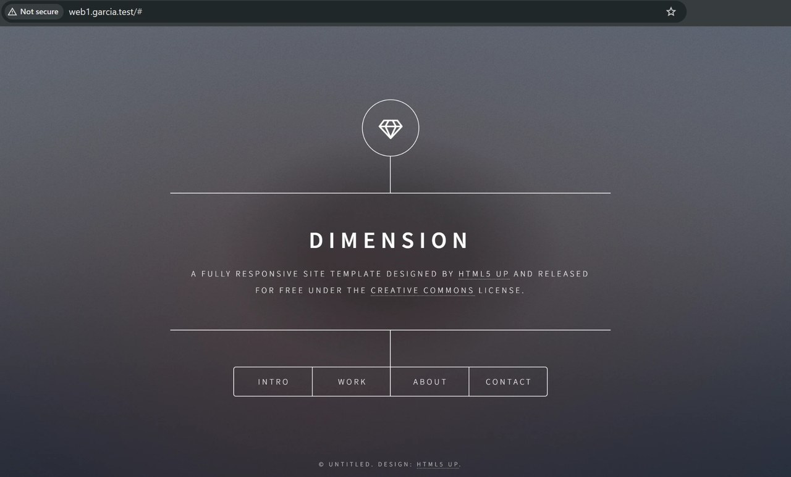
Si el navegador no te lleva a tu web
- Escribe siempre
http://. Sin él, el navegador puede pensar queweb1.garcia.testes una búsqueda y mandarte a Google. - Si te redirige a
https://y falla, es una función de seguridad del navegador: vuelve a escribirhttp://o prueba en una ventana de incógnito. - Si ves la página de bienvenida de Nginx en vez de tu web, la petición no coincide con tu
server_name: revisa que el nombre del ficherohostsy el de la configuración sean idénticos.
Si no tienes permisos de administrador
Sin ellos no puedes editar el fichero hosts. Puedes hacer todas las comprobaciones con curl.exe -H "Host: ..." como en el apartado 3.4, pero la evidencia del navegador tendrás que hacerla en un equipo donde sí los tengas (tu portátil, por ejemplo).
5. Un fallo de seguridad real: la carpeta .git¶
Has publicado la web clonando un repositorio, y git clone no solo descarga la web: también crea la carpeta .git, con toda la historia del repositorio. Y está dentro de root, así que… prueba desde PowerShell:
[core]
repositoryformatversion = 0
filemode = true
bare = false
logallrefupdates = true
[remote "origin"]
url = https://github.com/cloudacademy/static-website-example
fetch = +refs/heads/*:refs/remotes/origin/*
[branch "master"]
remote = origin
merge = refs/heads/master
Tu servidor está regalando el repositorio. Con herramientas automáticas, cualquiera puede descargar la carpeta .git entera y reconstruir todo el código fuente, incluidas las versiones antiguas. Si alguna vez se subió al repositorio una contraseña o una clave, aunque luego se borrara, sigue en la historia. No es un caso de laboratorio: es uno de los fallos más frecuentes en webs reales, y los robots que rastrean Internet lo buscan a diario.
Ciérralo. Vuelve a tu sesión SSH y edita la configuración del sitio:
Y añade este bloque dentro del bloque server, después del location /:
location ~ indica que lo que sigue es una expresión regular: se aplica a cualquier URL que contenga /.git. Y deny all prohíbe el acceso a todo el mundo.
Vuelve a probar desde tu ordenador, con curl.exe en PowerShell y en el navegador. Ahora el servidor responde 403 Forbidden:
PS C:\Users\alumno> curl.exe http://web1.garcia.test/.git/config
<html>
<head><title>403 Forbidden</title></head>
<body>
<center><h1>403 Forbidden</h1></center>
<hr><center>nginx</center>
</body>
</html>
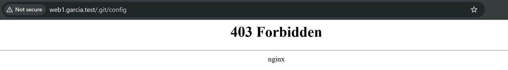
En un despliegue profesional
Lo correcto es que la carpeta .git ni siquiera llegue al servidor, o que la web publicada esté fuera del repositorio. Lo verás cuando automatices los despliegues en el Tema 7. La regla deny es una red de seguridad que conviene tener igualmente.
6. Segundo sitio: web2, subido por SFTP¶
En el mundo real no siempre hay un repositorio del que clonar: a veces tienes los ficheros en tu ordenador y hay que subirlos. Lo harás por SFTP, que funciona dentro de SSH. No hay que instalar nada en el servidor: tu servidor SSH ya lo incluye.
6.1 Preparar la carpeta en el servidor¶
6.2 Descargar la web en tu ordenador¶
Descarga en tu ordenador la plantilla Phantom de HTML5 UP desde https://html5up.net/phantom, con el botón Download de arriba a la derecha:
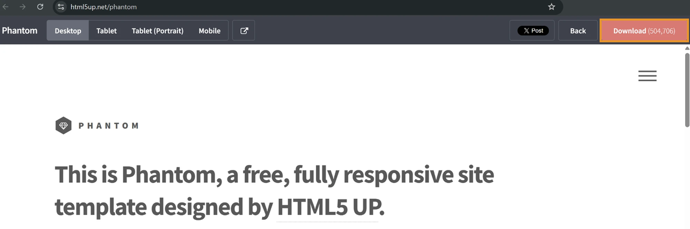
Obtendrás el fichero html5up-phantom.zip (unos 1,5 MB), que quedará en tu carpeta Descargas. No lo descomprimas: subirás el .zip y lo descomprimirás en el servidor.
6.3 Subir el fichero¶
Tienes tres formas de hacerlo, y las tres usan SSH por debajo. Elige una:
| Forma | Qué es | ¿Hay que instalar algo? |
|---|---|---|
scp |
Un solo comando que copia el fichero y termina. La más rápida | No |
sftp |
Una sesión interactiva en modo texto: te mueves, listas, subes y bajas varios ficheros | No |
| FileZilla | Un programa gráfico: arrastras los ficheros de una ventana a otra | Sí |
scp y sftp vienen con el cliente OpenSSH de Windows, el mismo que te da el comando ssh, y usan tu clave igual que él.
Desde PowerShell, colócate en tu carpeta de Descargas y copia el fichero al servidor:
cd $env:USERPROFILE\Downloads
scp html5up-phantom.zip usuario@192.168.56.10:/var/www/web2.garcia.test/
El destino se escribe usuario@servidor:carpeta: lo que va detrás de los dos puntos es la ruta en el servidor. Si el fichero ya existía, scp lo sobrescribe sin preguntar.
Para copiar en sentido contrario, del servidor a tu ordenador, se invierte el orden: scp usuario@192.168.56.10:/ruta/fichero . (el punto final es "la carpeta en la que estoy").
Desde PowerShell, colócate en tu carpeta de Descargas y abre una sesión SFTP:
Dentro de la sesión, el prompt cambia a sftp>. Los comandos se parecen a los de la terminal: cd y ls actúan sobre el servidor, y lcd y lls sobre tu ordenador:
put sube un fichero; get haría lo contrario, descargarlo.
Descarga el cliente de FileZilla desde filezilla-project.org.
Cuidado con el instalador
El botón verde Download FileZilla Client descarga un instalador que puede incluir programas patrocinados (bundled offers). No lo uses. Pulsa en Show additional download options, al final de la página:
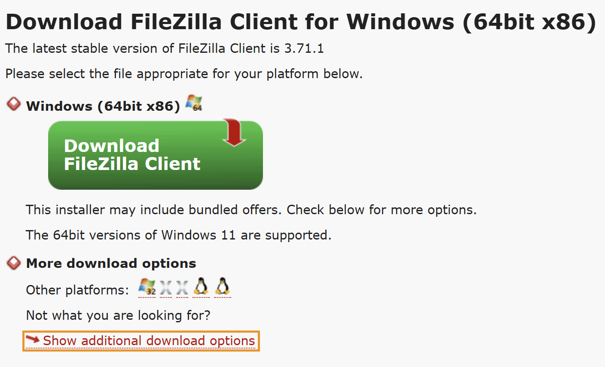
Y descarga el que acaba en win64-setup.exe, el instalador limpio:
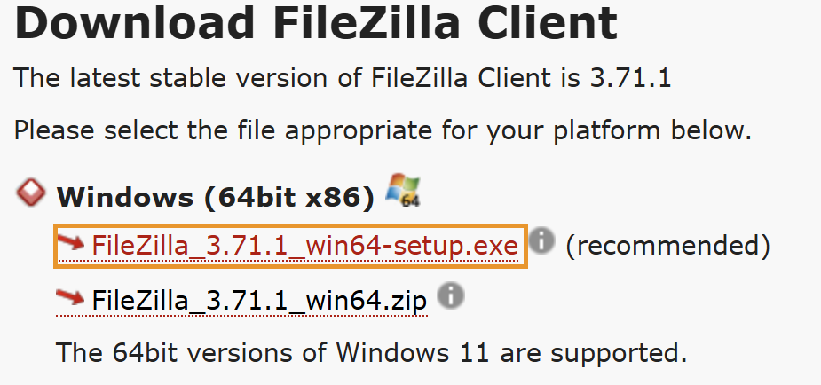
El .zip de debajo es la versión portable: se descomprime y se ejecuta sin instalar nada. Te sirve si en tu equipo no tienes permisos para instalar programas.
Instálalo con las opciones que vienen marcadas. FileZilla se muestra en el idioma de tu Windows: aquí tienes los nombres en español y, entre paréntesis, en inglés. Al abrirlo por primera vez aparece una ventana de bienvenida; ciérrala con OK.
En la práctica 1.1 desactivaste el acceso por contraseña, así que FileZilla tendrá que usar tu clave privada. Abre Archivo → Gestor de sitios… (File → Site Manager…), pulsa Nuevo sitio (New site) y escribe un nombre para la conexión. Es libre, pero lo más claro es usar el hostname de tu máquina (debian-garcia). Elige primero el protocolo: al cambiarlo a SFTP desaparece el campo Cifrado (Encryption), porque SFTP va siempre cifrado dentro de SSH. Después rellena el resto:
| Campo | Valor |
|---|---|
| Protocolo (Protocol) | SFTP - SSH File Transfer Protocol |
| Servidor (Host) | 192.168.56.10 |
| Puerto (Port) | 22 |
| Modo de acceso (Logon Type) | Archivo de claves (Key file) |
| Usuario (User) | tu usuario de la Debian |
| Archivo de claves (Key file) | C:\Users\tuusuario\.ssh\id_ed25519 |
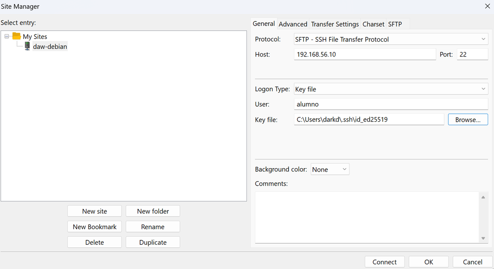
Elige el archivo de claves con Examinar… (Browse…). Es la clave privada, el fichero sin .pub. Al principio no la verás: el explorador solo muestra ficheros .ppk. Cambia el filtro, abajo a la derecha, a Todos los archivos (All files). Las versiones actuales de FileZilla leen directamente las claves de OpenSSH; si la tuya te pregunta si quieres convertir la clave al formato .ppk (el de PuTTY), acepta y guarda la copia junto a la original.
Pulsa Conectar (Connect). Si te pregunta si quieres que recuerde las contraseñas (Remember passwords?), elige No guardar contraseñas (Do not save passwords): entras con la clave, así que no hay contraseña que guardar.
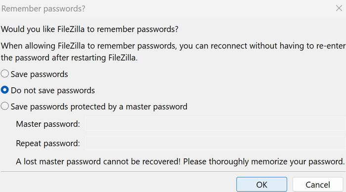
La primera vez, FileZilla te mostrará la huella del servidor (Fingerprint) y te preguntará si confías en él:
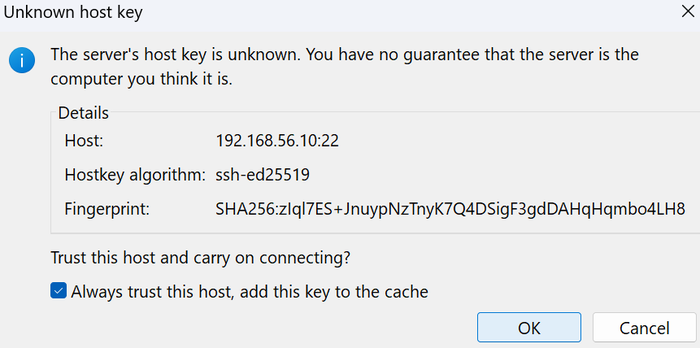
Es la misma comprobación que hiciste en la práctica 1.1 con ssh. Antes de aceptar, compárala con la huella real, desde tu sesión SSH:
Si la cadena SHA256:… coincide, marca Confiar siempre en este servidor (Always trust this host, add this key to the cache) y pulsa Aceptar (OK). Sin esa casilla, FileZilla te lo volverá a preguntar en cada conexión.
Una vez conectado, verás tu ordenador a la izquierda y el servidor a la derecha. Al conectar, la parte derecha muestra tu carpeta personal en el servidor (/home/tuusuario): hay que cambiar a la carpeta de la web. En el campo Sitio remoto (Remote site) de la derecha escribe /var/www/web2.garcia.test y pulsa Enter. En el campo Sitio local (Local site) de la izquierda escribe la ruta de tu carpeta de Descargas (C:\Users\tuusuario\Downloads) y pulsa Enter. Por último, arrastra html5up-phantom.zip de la lista de ficheros de la izquierda a la de la derecha.
Cuando termine, el panel de mensajes de arriba dirá File transfer successful, el fichero aparecerá a la derecha junto a la carpeta html y la pestaña Transferencias satisfactorias (Successful transfers) de abajo lo contará:
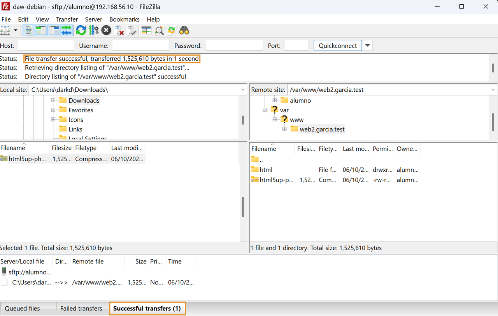
Para la evidencia 9 de la entrega, haz clic derecho en el panel de mensajes, elige Copiar al portapapeles (Copy to clipboard) y pega el texto en tu documento.
¿Por qué has podido subirlo sin sudo?
scp, sftp y FileZilla entran con tu usuario y solo puede escribir donde tú puedes escribir. Has podido subir el fichero porque eres el propietario de /var/www/web2.garcia.test. Si intentas subirlo directamente a /var/www, que es de root, obtendrás Permission denied. Es el comportamiento correcto.
6.4 Descomprimir en el servidor¶
De vuelta en tu sesión SSH:
cd /var/www/web2.garcia.test
unzip html5up-phantom.zip -d html
rm html5up-phantom.zip
chmod -R u=rwX,go=rX /var/www/web2.garcia.test
ls -la html
unzip va mostrando cada fichero que extrae (casi cien líneas) y al final verás el contenido de html:
Archive: html5up-phantom.zip
inflating: html/LICENSE.txt
creating: html/assets/
creating: html/assets/webfonts/
...
inflating: html/images/pic15.jpg
inflating: html/elements.html
total 80
drwxr-xr-x 4 alumno alumno 4096 Oct 6 12:47 .
drwxr-xr-x 3 alumno alumno 4096 Oct 6 12:47 ..
drwxr-xr-x 6 alumno alumno 4096 Mar 6 2022 assets
-rw-r--r-- 1 alumno alumno 19131 Mar 6 2022 elements.html
-rw-r--r-- 1 alumno alumno 5408 Mar 6 2022 generic.html
drwxr-xr-x 2 alumno alumno 4096 Mar 6 2022 images
-rw-r--r-- 1 alumno alumno 8654 Mar 6 2022 index.html
-rw-r--r-- 1 alumno alumno 17128 Mar 6 2022 LICENSE.txt
-rw-r--r-- 1 alumno alumno 861 Mar 6 2022 README.txt
El index.html está directamente dentro de html, que es lo que necesita la directiva root. Las fechas de 2022 no son un error: unzip conserva las fechas originales de los ficheros dentro del .zip.
6.5 Configurar y activar web2¶
Esta vez lo haces tú. Parte de la configuración de web1 como plantilla:
sudo cp /etc/nginx/sites-available/web1.garcia.test /etc/nginx/sites-available/web2.garcia.test
sudo nano /etc/nginx/sites-available/web2.garcia.test
Cambia lo que haga falta para que sea el sitio web2 (el nombre, la carpeta y los dos registros), actívalo con su enlace simbólico, comprueba la configuración y recarga. El bloque location ~ /\.git puede quedarse: no estorba, y protege el sitio si algún día lo despliegas con Git.
Son cuatro líneas: no te olvides de los registros
server_name, root, access_log y error_log. Si dejas los registros con web1, nginx -t no se quejará, porque la configuración es válida, pero las peticiones de web2 acabarán mezcladas en los registros de web1. Es un error silencioso: compruébalo con cat antes de seguir.
Si tu fichero hosts ya tiene web2.garcia.test, entra en http://web2.garcia.test:
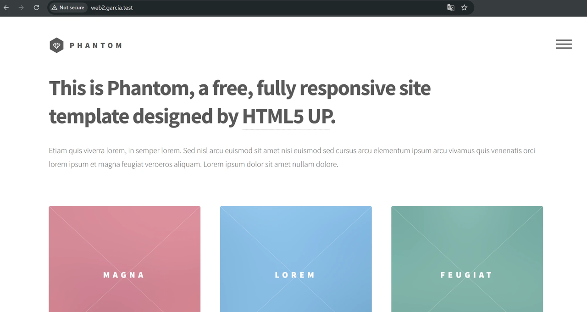
Comprueba que cada nombre muestra su web, y que http://192.168.56.10 sigue mostrando la página de bienvenida de Nginx.
7. Los registros¶
Los registros son la herramienta de diagnóstico más importante que tienes. Cuando alguien te diga "la web no funciona", lo primero que miráis juntos es esto.
Los ficheros de /var/log/nginx solo los pueden leer root y el grupo adm, así que necesitas sudo. Deja el registro de accesos de web1 abierto en directo:
Recarga http://web1.garcia.test en el navegador con Ctrl+F5 y observa cómo aparece de golpe una línea por cada petición: el HTML, las hojas de estilo, los scripts, las imágenes… Pulsa Ctrl+C para salir.
Si no aparece nada
- Usa Ctrl+F5, no F5 a secas. El navegador guarda en caché lo que ya ha descargado y puede no volver a pedirlo, o pedirlo y recibir un
304 Not Modified. También sirve una ventana de incógnito. - Pulsar los botones de la web no genera peticiones. La web de
web1es una sola página: INTRO, WORK, ABOUT y CONTACT solo cambian la parte de la URL que va detrás de#y muestran contenido que ya estaba cargado. El navegador nunca envía al servidor lo que va detrás de#.
7.1 Un 404¶
Pide una página que no existe, por ejemplo http://web1.garcia.test/noexiste.html:
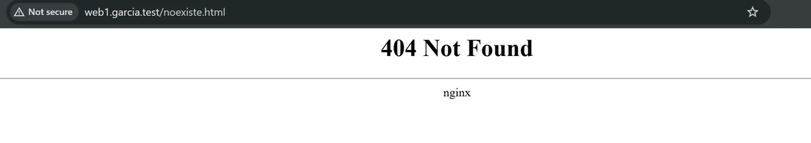
Busca la petición en el registro de accesos:
192.168.56.1 - - [06/Oct/2026:12:57:02 +0200] "GET /images/overlay.png HTTP/1.1" 200 4385 "http://web1.garcia.test/assets/css/main.css" "Mozilla/5.0 (...)"
192.168.56.1 - - [06/Oct/2026:12:57:02 +0200] "GET /assets/fonts/fontawesome-webfont.woff2?v=4.6.3 HTTP/1.1" 200 71896 "http://web1.garcia.test/assets/css/font-awesome.min.css" "Mozilla/5.0 (...)"
192.168.56.1 - - [06/Oct/2026:12:57:02 +0200] "GET /images/bg.jpg HTTP/1.1" 200 37864 "http://web1.garcia.test/assets/css/main.css" "Mozilla/5.0 (...)"
192.168.56.1 - - [06/Oct/2026:12:57:02 +0200] "GET /favicon.ico HTTP/1.1" 404 181 "http://web1.garcia.test/" "Mozilla/5.0 (...)"
192.168.56.1 - - [06/Oct/2026:12:58:41 +0200] "GET /noexiste.html HTTP/1.1" 404 181 "-" "Mozilla/5.0 (...)"
(El último campo, que aquí aparece abreviado como Mozilla/5.0 (...), es largo: identifica el navegador y el sistema operativo).
Cada línea es una petición. Toma la última y léela por partes:
| Campo | Valor | Qué es |
|---|---|---|
| IP del cliente | 192.168.56.1 |
Tu ordenador, visto desde la red Host-only |
| Fecha y hora | [06/Oct/2026:12:58:41 +0200] |
Cuándo llegó la petición |
| Petición | "GET /noexiste.html HTTP/1.1" |
Método, ruta y versión de HTTP |
| Código de estado | 404 |
La respuesta: no encontrado |
| Tamaño | 181 |
Bytes enviados en el cuerpo de la respuesta (la página de error) |
| Referer | "-" |
Desde qué página se llegó. - significa que la escribiste a mano |
| User-Agent | "Mozilla/5.0 (...)" |
El navegador del cliente |
Fíjate en dos detalles de las otras líneas:
- El referer de
overlay.pngybg.jpgesmain.css: esas imágenes no las pide el HTML, sino la hoja de estilos. El registro te dice quién ha provocado cada petición. - Hay un
404que tú no has pedido:/favicon.ico. Es el icono de la pestaña, y el navegador lo pide por su cuenta a cualquier web. Esta no lo tiene, así que falla. Es inofensivo, y lo verás en los registros de casi todas las webs.
Ahora mira el registro de errores:
2026/10/06 12:16:08 [error] 1545#1545: *14 access forbidden by rule, client: 192.168.56.1, server: web1.garcia.test, request: "GET /.git/config HTTP/1.1", host: "web1.garcia.test"
2026/10/06 12:16:55 [error] 1545#1545: *16 access forbidden by rule, client: 192.168.56.1, server: web1.garcia.test, request: "GET /.git/config HTTP/1.1", host: "web1.garcia.test"
El 404 no aparece. Un 404 no es un error del servidor: el cliente ha pedido algo que no existe, y el servidor ha respondido correctamente. Por eso solo deja rastro en el registro de accesos.
Lo que sí aparece son tus pruebas del apartado 5: los 403 de la carpeta .git, con el motivo, access forbidden by rule (prohibido por una regla: tu deny all). El registro de errores no solo dice que algo ha fallado, sino por qué.
7.2 Un 403 por permisos¶
Ahora provoca tú un fallo. Quita a todos, menos a ti, el permiso para entrar en la carpeta de la web:
Ahora pide la página principal, http://web1.garcia.test/ (con Ctrl+F5). Aparecerá un 403 Forbidden:
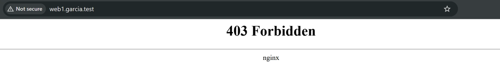
Es la misma página que viste con la carpeta .git, pero la causa es otra. Para saber cuál, mira el registro de errores:
2026/10/06 13:04:34 [error] 1716#1716: *43 "/var/www/web1.garcia.test/html/index.html" is forbidden (13: Permission denied), client: 192.168.56.1, server: web1.garcia.test, request: "GET / HTTP/1.1", host: "web1.garcia.test"
El registro te dice exactamente qué ha pasado: el usuario www-data no tiene permiso para llegar al fichero (Permission denied). Tú sigues pudiendo leerlo, porque eres el propietario, y por eso este error despista tanto.
Compáralo con el 403 de la carpeta .git: el navegador mostraba la misma página, pero el registro decía access forbidden by rule (una regla deny). Aquí dice Permission denied (permisos del sistema de ficheros). Mismo código, causas distintas: el registro es lo que te dice cuál es.
¿Te sale un 404 en vez de un 403?
Es que has recargado otra dirección, por ejemplo /noexiste.html del apartado anterior. Nginx intenta comprobar si ese fichero existe, no puede entrar en la carpeta, y try_files pasa a su última opción: =404. El navegador dice 404, pero el registro de errores cuenta la verdad:
2026/10/06 13:02:21 [crit] 1714#1714: *41 stat() "/var/www/web1.garcia.test/html/noexiste.html" failed (13: Permission denied), client: 192.168.56.1, server: web1.garcia.test, request: "GET /noexiste.html HTTP/1.1", host: "web1.garcia.test"
Es una buena lección: el código que ve el navegador no siempre cuenta toda la historia; el registro, sí.
Restaura los permisos y comprueba que la web vuelve a funcionar:
Diagnosticar en tres pasos
Cuando una web no carga, pregúntate en este orden:
- ¿Está el servicio funcionando?
systemctl status nginx - ¿Escucha donde debe?
sudo ss -tlnp | grep nginx - ¿Qué dicen los registros?
sudo tail /var/log/nginx/*error.log, yjournalctl -u nginxsi el servicio no arranca.
Si el navegador muestra un 403, piensa en permisos o en una regla deny. Si muestra un 404, revisa la directiva root. Si muestra la página de bienvenida en lugar de tu web, revisa el server_name y el fichero hosts.
8. Haz una instantánea¶
Apaga la máquina desde tu sesión SSH:
En VirtualBox, en la pestaña Snapshots, pulsa Take y llama a la instantánea p2.1-nginx. Quedará colgando de la instantánea de la práctica 1.1:
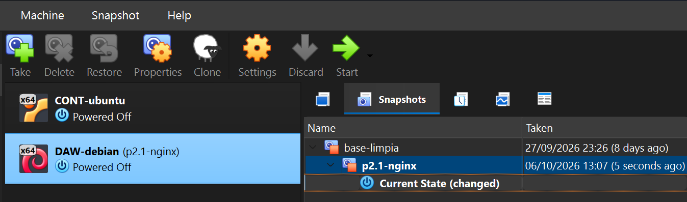
La siguiente práctica parte de aquí.
Cuestiones finales¶
Cuestión 1
¿Qué ocurre si creas el fichero de un sitio en sites-available pero no haces el enlace simbólico en sites-enabled? ¿Qué ventaja tiene este sistema de dos carpetas frente a tener un único directorio de configuración?
Cuestión 2
En esta práctica, el propietario de las carpetas de las webs eres tú y no www-data. Explica por qué. ¿Qué permisos concretos necesita www-data sobre las carpetas y sobre los ficheros? ¿Qué ves en el navegador y en qué registro, si le faltan?
Cuestión 3
Entra en http://192.168.56.10. ¿Qué sitio responde, y por qué? Ahora desactiva el sitio default (borra solo el enlace de sites-enabled), recarga Nginx y vuelve a entrar por IP. ¿Qué responde ahora y por qué? Vuelve a activar default al terminar.
Cuestión 4
En el apartado 3.4 viste tu web con curl.exe -H "Host: ..." sin haber tocado el fichero hosts. ¿Qué demuestra eso sobre cómo elige Nginx el sitio? Y entonces, ¿para qué sirve el fichero hosts?
Cuestión 5
Para subir web2 no has instalado ningún servidor FTP. ¿Por qué no ha hecho falta? Si hubieras usado FTP sin cifrar desde la wifi del aula, ¿qué podría ver un compañero que estuviera capturando el tráfico?
Entrega¶
Como en la práctica 1.1, lo que entregas son las pruebas de que tu servidor funciona y está bien configurado. La entrega tiene dos partes, y las dos son obligatorias.
Parte 1 — Documento de evidencias (40 %)¶
Un único PDF llamado P2.1-Apellido-Nombre.pdf que contenga, en este orden:
- Portada con tu nombre, el grupo, el hostname de tu máquina y tus dos dominios.
- Las evidencias de la tabla de abajo.
- Las respuestas a las cinco cuestiones finales, con tus palabras.
Texto, no capturas
La salida de los comandos se entrega copiada como texto, junto con el comando y el prompt
(usuario@debian-tuapellido:~$ ...), dentro de un bloque o con tipografía de ancho fijo.
Solo hay una excepción, porque ahí sí hace falta ver la pantalla: las dos webs en el navegador.
Evidencias que debe contener el documento:
| # | Qué hay que demostrar | Dónde | Comando cuya salida se pega |
|---|---|---|---|
| 1 | Nginx está instalado y funcionando, en tu máquina | Debian | hostname, sudo nginx -v y systemctl status nginx --no-pager |
| 2 | Hay tres sitios activos | Debian | ls -l /etc/nginx/sites-enabled/ |
| 3 | La configuración de web1, con la regla de .git |
Debian | cat /etc/nginx/sites-available/web1.tuapellido.test |
| 4 | La configuración es correcta | Debian | sudo nginx -t |
| 5 | Propietarios y permisos de las webs | Debian | ls -la /var/www/ y ls -la /var/www/web2.tuapellido.test/html |
| 6 | Tu ordenador resuelve los dos nombres | Tu ordenador | ping -n 1 web1.tuapellido.test y ping -n 1 web2.tuapellido.test |
| 7 | Cada nombre devuelve su web | Tu ordenador | Los dos comandos que hay debajo de esta tabla |
| 8 | La carpeta .git está protegida |
Tu ordenador | curl.exe -sI http://web1.tuapellido.test/.git/config (debe responder 403) |
| 9 | Has subido web2 por SSH |
Tu ordenador | El comando scp con su salida, la sesión de sftp completa o, con FileZilla, el texto del panel de mensajes de la transferencia |
| 10 | Los registros muestran tus pruebas | Debian | sudo tail -n 8 /var/log/nginx/web1.access.log (con peticiones 200, 404 y 403) y sudo tail -n 3 /var/log/nginx/web1.error.log (con el Permission denied) |
| 11 | Las dos webs, en el navegador | Tu ordenador | Captura de cada una con la barra de direcciones visible |
Comandos de la evidencia 7, en PowerShell:
curl.exe -s http://web1.tuapellido.test | Select-String "<title>"
curl.exe -s http://web2.tuapellido.test | Select-String "<title>"
Cada evidencia debe ir acompañada de una frase tuya explicando qué demuestra. Una tanda de comandos pegados sin explicar no puntúa.
Parte 2 — Demostración en clase (60 %)¶
Es una mini entrevista individual. Cuando se te llame, vienes a la mesa del profesor con tu ordenador y la máquina virtual preparada para arrancar. En unos dos o tres minutos:
- Te conectas por SSH a tu máquina y abres tus dos webs en el navegador, por su nombre.
- Haces la tarea que se te pida en ese momento. Por ejemplo: desactivar un sitio y volver a activarlo, encontrar en el registro una petición concreta, o diagnosticar un error que se te provoque.
- Explicas en voz alta una de tus decisiones (por qué los ficheros son tuyos y no de
www-data, para qué sirve el enlace simbólico, por qué hay que proteger.git…).
Cómo se califica
La demostración pesa más que el documento porque es lo que de verdad acredita el resultado de aprendizaje. Una demostración que no funciona no se compensa con un documento impecable: en ese caso la práctica queda pendiente hasta que el servidor funcione, y se vuelve a demostrar.
Criterios de evaluación¶
| Parte | Criterio | Peso |
|---|---|---|
| Documento | Las once evidencias están completas, en texto (salvo las capturas) y cada una con su frase explicativa | 25 % |
| Documento | Las cinco cuestiones finales están respondidas con corrección y criterio propio | 15 % |
| Demostración | Los dos sitios responden por su nombre desde tu equipo, con .git protegido |
20 % |
| Demostración | Realizas la tarea que se te pide y explicas lo que estás haciendo | 20 % |
| Demostración | Explicas una de tus decisiones con tus palabras y respondes a las preguntas sobre ella | 20 % |
Si en la demostración o en el documento aparecen una máquina o unos dominios que no son los tuyos (el hostname, el apellido de los dominios), la parte correspondiente cuenta como no superada.
Antes de entregar, comprueba que…¶
- ☐
http://web1.tuapellido.testyhttp://web2.tuapellido.testmuestran cada uno su web. - ☐
http://192.168.56.10sigue mostrando la página de bienvenida de Nginx. - ☐ Las carpetas de las webs son de tu usuario, con carpetas
755y ficheros644. - ☐
http://web1.tuapellido.test/.git/configresponde403. - ☐ Cada sitio tiene sus propios registros en
/var/log/nginx/. - ☐
sudo nginx -tno da errores. - ☐ Existe la instantánea
p2.1-nginx. - ☐ Las once evidencias están en el PDF, en texto y comentadas.
- ☐ Las cinco cuestiones están respondidas.
- ☐ El archivo se llama
P2.1-Apellido-Nombre.pdf.
Referencias¶
- Documentación de Nginx — Beginner's Guide
- Documentación de Nginx — Nombres de servidor (
server_name) - Documentación de Nginx — Cómo procesa Nginx una petición
- Debian Wiki — Nginx
- RFC 6761 — Nombres de dominio de uso especial (
.test) - FileZilla · WinSCP, una alternativa a FileZilla para Windows
- Webs de ejemplo: cloudacademy/static-website-example y Phantom, de HTML5 UP (licencia CC BY 3.0)